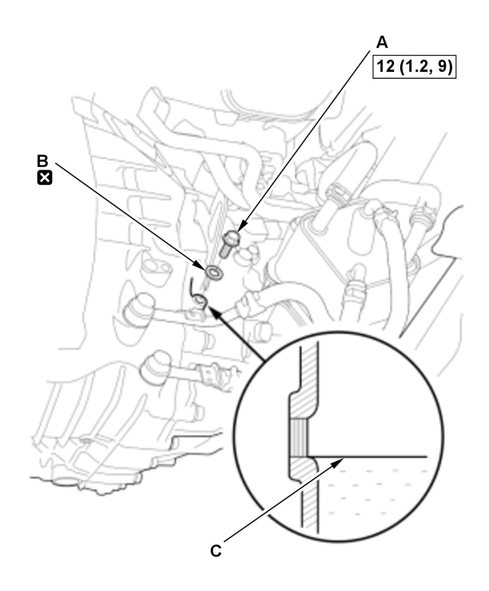

MTF Inspection and Replacement (K20C1 (M/T)) (2017 2018 2019 2020 2021): Inspection
WARNING: This page is about a different variant/trim than selected.
NOTE: How to read the torque specifications .
- Vehicle - Lift
- Engine Undercover Plate - Remove
- MTF - Check

Courtesy of HONDA, U.S.A., INC.1. Remove the oil check bolt (A) with the sealing washer (B). 2. Check the condition of the MTF and make sure it is at the proper level (C).
NOTE:
- If the fluid is dirty, replace the MTF.
- If the fluid level is below the proper level, check for fluid leaks at the transmission and the MTF lines. If a problem is found, fix it before filling the transmission with MTF.
3. Install the oil check bolt with a new sealing washer.
- All Removed Parts - Install
1. Install the parts in the reverse order of removal.